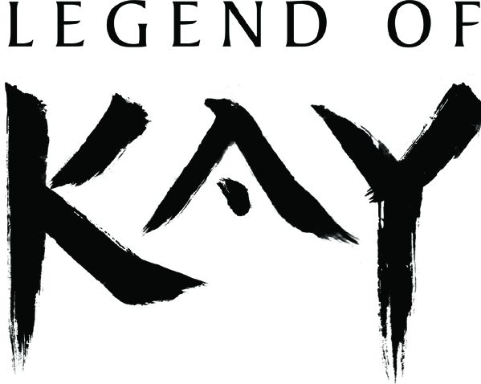
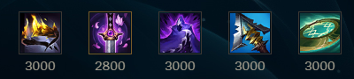
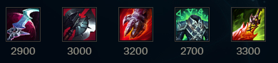

| Blog League of Kayn |  |
|---|---|
Blog League of KaynNo Kayn Azul (Assassino das Sombras), o foco é maximizar o dano explosivo e a mobilidade. A build ideal começa com Hubris, garantindo dano extra após eliminações, seguido da Lâmina Fantasma de Youmuu para velocidade e letalidade. O Limiar da Noite oferece um escudo contra habilidades inimigas, enquanto a Serraespada de Serylda adiciona penetração de armadura e lentidão nos ataques. Por fim, a Manopla Axiomática reduz o tempo de recarga do ultimate, permitindo jogadas agressivas e eliminações rápidas. Já o Kayn Vermelho (Assassino Darkin) prioriza resistência e sustento em lutas prolongadas. O Eclipse concede um escudo e vampirismo ao causar dano, enquanto o Cutelo Negro reduz a armadura dos inimigos ao longo do combate. A Couraça do Defunto oferece vida e velocidade extra, enquanto o Semblante Espiritual amplifica a cura do Darkin. Para fechar, a Dança da Morte converte dano recebido em sangramento, aumentando sua sobrevivência em trocas estendidas. Essa build faz do Kayn um verdadeiro colosso dentro das teamfights. |
|
| Build kayn azul | Build kayn vermelho |
|


|
|
| Blog League of Kayn | |